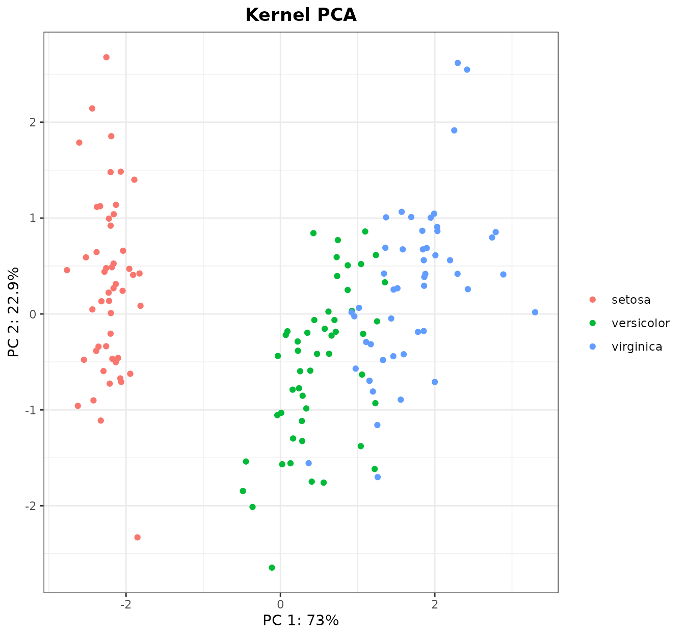

Purpose
kerntools provides R tools for working with a family
of Machine Learning methods called kernel methods. This package
implements several kernel functions for treating nonnegative and real
vectors, real matrices, categorical and ordinal variables, sets, and
strings. Several tools for studying the resulting kernel matrix or to
compare two kernel matrices are available. These diagnostic tools may be
used to infer the kernel(s) matrix(ces) suitability in model training.
kerntools also provides functions for extracting the
feature importance of Support Vector Machines (SVMs) or displaying
customizable kernel Principal Components Analysis (PCA) plots. For
convenience, widespread model’s performance measures and feature
importance visualization are available for the user.
Package Overview
In this section several examples will be used to illustrate a typical
workflow of kerntools.
A simple example
Let’s suppose we are working with the well known iris
dataset. This dataset contains sepal and petal measurements for
N = 150 iris flowers. These flowers belong to three different
species: Iris setosa, Iris versicolor, and Iris
virginica. There are D = 4 numeric variables (also called
“features”) that are measured: Sepal.Length,
Sepal.Width, Petal.Length and
Petal.Width.
We first standardize these four variables so they have mean 0 and standard deviation 1. This places them on a common ground. Then, we compute our first kernel: the linear kernel.
iris_std <- scale(iris[,c( "Sepal.Length","Sepal.Width","Petal.Length", "Petal.Width")])
KL <- Linear(iris_std)
dim(KL)
#> [1] 150 150
class(KL)
#> [1] "matrix" "array"The linear kernel is simply the pairwise inner product between all
N samples (in our case: flower measurements). The result is
“stored” on a matrix (the kernel matrix) that has dimensions
NxN. Furthermore, it is always symmetric and positive
semi-definite (PSD). To check the kernel between two samples (for
instance, 32 and 106), we can type either KL[32,106] or
KL[106,32]. It should be noted that kernel matrices
generated by kerntools have class “matrix”, “array”. In
fact, to keep things simple, no function in this package requires any
special classes/objects not present in base R.
Next, we examine this kernel matrix further. Although it is not
excessively large, it is large enough to make simply typing
KL in R unpractical. Instead, we may summarize its values
using a histogram:
histK(KL, vn = TRUE)This “almost-gaussian” shape is due to the features’ scaling. Further
parameters, including color, can be passed to histK() (for
more info, check the documentation of graphics::hist()).
The von Neumann entropy shown here is optional (in fact, this value can
be computed separately doing vonNeumann(KL)). Entropy
values close to 0 indicate that all kernel matrix elements are very
similar, while values close to 1 indicate a high variability.
Another possibility is to visualize the whole kernel matrix with a heatmap:
heatK(KL,cos.norm = FALSE)Here, yellow denotes a high similarity between the samples, while red
denotes that the similarity is low (the colour palette is customizable
via the parameter color). At a glance we see that the first
50 samples (I. setosa) have a higher intra-group similarity.
Also, they are very different from the samples 101-150 (which correspond
to I. virginica). Instead, I. versicolor is kind of
intermediate between these two groups.
To confirm our intuitions about the (dis)similarity among the three species, we may proceed to a widespread ordination method: the Principal Components Analysis (PCA). PCAs can be computed from kernel matrices very easily. In fact, using kernel matrices expands what a PCA can do, but this will be discussed in further sections. To display a beautiful PCA plot that colors the samples by species, we do:

Indeed, we can see that I. setosa and I. virginica
are the most different groups, while I. versicolor and
I.virginica are very close. The colors can be changed if
desired with the kPCA(...,colors) parameter.
After seeing this plot, we can infer that a predictive model from these data will work well. Although we have a ton of machine learning methods at our disposal, in this vignette we will stick with the kernel methods. More specifically, we will use the most famous kernel method: the Support Vector Machine (SVM).
SVMs are not implemented in kerntools.
However, they are in other R packages like kernlab or
e1071. Here we will use the ksvm() function of
the former package:
library(kernlab)
set.seed(777)
## Training data
test_idx <- sample(1:150)[1:30] # 20% of samples
train_idx <- (1:150)[-test_idx]
KL_train <- KL[train_idx,train_idx]
## Model (training data)
linear_model <- kernlab::ksvm(x=KL_train, y=iris_species[train_idx], kernel="matrix")
linear_model
#> Support Vector Machine object of class "ksvm"
#>
#> SV type: C-svc (classification)
#> parameter : cost C = 1
#>
#> [1] " Kernel matrix used as input."
#>
#> Number of Support Vectors : 27
#>
#> Objective Function Value : -0.9459 -0.3184 -14.3709
#> Training error : 0.025First and foremost: in prediction models, it is mandatory to have an additional test set so a honest estimation of the model’s performance can be computed (we will do this latter). Also, please note that in a real-world machine learning setting, training data should have been preprocessed first and then the same exact preprocessing should have been applied to test data. In our case, the only preprocessing was standardize the dataset: thus, the mean and standard deviation should have been computed from training data, and then these values should have been used for standardize both the training and test sets. That being said, in order to not interrupt the flow of this vignette, we will use leave things as they are.
Now returning to our (questionably obtained) model, we have a very low training error. The support vectors (which are the only samples that are relevant for us, as the rest are not used to define the SVM discriminating hyperplane) constitute only the 22% (approx) of samples. Not bad.
Before jumping to the test set, we may be interested in another topic: feature importance. This means studying which variables are considered more important by the model when discriminating between classes. Feature importance is important for avoiding “black-box models”: prediction models that we know that work well, but not why.
Obtaining the importances out of a SVM model can be somewhat
convoluted (this is discussed later in more depth) and sometimes
downright impossible. In our particular case, the only problem is that
we wanted to classify 3 classes (species)… but SVM classifiers are
binary. For discriminating 3 classes, kernlab in fact
builds 3 classifiers: “setosa vs versicolor”, “setosa vs virginica”, and
“versicolor vs virginica”. These 3 classifiers constitute the
linear_model object and the prediction of the class of a
sample is done by a voting scheme. To simplify things, for the features’
importance part, we will focus only on the third classifier: “versicolor
vs virginica”, which we have seen previously that are the two most
related species. The way to go here is to obtain the index of the
Support Vectors in our model, and their coefficients. All that is
gracefully provided by kernlab. Then, we will return to
kerntools and call the function svm_imp():
## Third model: Versicolor vs virginica
sv_index <- kernlab::alphaindex(linear_model)[[3]] # Vector with the SV indices
sv_coef <- kernlab::coef(linear_model)[[3]] # Vector with the SV coefficients
feat_imp3 <- svm_imp(X=iris_std[train_idx,],svindx=sv_index,coeff=sv_coef)
#> Do not use this function if the SVM model was created with the RBF,
#> Laplacian, Bray-Curtis, Jaccard/Ruzicka, or Kendall's tau kernelsNote that here we need the data that we used to compute
KL: iris_std. It is very important to
use this version of the dataset, and not any other version with more
pre-processing (or the “original” without pre-processing).
svm_imp() has parameters like center,
scale and cos.norm to take this widespread
normalization techniques into account, but it is better to play
safe.
Conveniently, kerntools provides a function to visualize
the features’ importance:
plotImp(feat_imp3, leftmargin = 7, main="3rd model: versicolor vs virginica", color="steelblue1")#> $first_features
#> [1] "Petal.Length" "Petal.Width" "Sepal.Width" "Sepal.Length"
#>
#> $cumsum
#> [1] 1
#>
#> $barplot
#> [,1]
#> [1,] 0.7
#> [2,] 1.9
#> [3,] 3.1
#> [4,] 4.3As we can see, the model considers the petals most discriminating that the sepals, and within the petals’ measures, the petal length.
If we return to the PCA, we could also check the weight of each
variable in the first and second PCs (that is, the ones we displayed).
To do so, it comes in handy the kPCA_imp() function. Again,
this function requires the dataset that generated the KL
matrix:
loadings <- kPCA_imp(iris_std)
#> Do not use this function if the PCA was created with the RBF,
#> Laplacian, Bray-Curtis, Jaccard/Ruzicka, or Kendall's tau kernels
pcs <- loadings$loadings[1:2,]
pcs
#> Sepal.Length Sepal.Width Petal.Length Petal.Width
#> PC1 0.5210659 -0.2693474 0.58041310 0.56485654
#> PC2 0.3774176 0.9232957 0.02449161 0.06694199It seems that the first component is dominated by Petal Length and Petal Width but also by Sepal Length. The second component, that plays a role in discriminating I. versicolor and I.virginica, is dominated by Sepal Width. The PCA disagrees a bit with the SVM feature importances, but remember that in the latter we focused only on the “versicolor vs virginica” problem, while in the former we are looking at the ordination of the three classes. We may represent the contributions of the four features for the 1st PC, and to make things easier we will include the 2nd PC onto the barplot:
plotImp(pcs[1,], y=pcs[2,], ylegend="PC2",absolute=FALSE, main="PC1", leftmargin = 7, color="rosybrown1")#> $first_features
#> [1] "Petal.Length" "Petal.Width" "Sepal.Length" "Sepal.Width"
#>
#> $cumsum
#> [1] 1
#>
#> $barplot
#> [,1]
#> [1,] 0.7
#> [2,] 1.9
#> [3,] 3.1
#> [4,] 4.3We used absolute=FALSE because the contribution of each
variable to the PC is relevant not only in magnitude, but also in sign.
Pink bars represent PC1, while the black line represents PC2 (parameter
y). As we only wanted to see the order and the relative
magnitude, the X axis show the relative contribution (in the
plotImp() function, relative=TRUE by
default).
With kerntools, we can draw the contributions on the PCA
plot as arrows. We only need the PCA plot (given by kPCA())
and the contributions (given by kPCA_imp()):
kPCA_arrows(plot=kpca$plot,contributions=t(pcs),colour="grey15")(Note that the arrows are scaled to match with the original PCA plot.
They are somewhat orientative: their directions are correct, and longer
arrows represent a greater contribution to a PC that shorter arrows;
however, usually the arrows’ magnitudes do not coincide with the actual
magnitudes that can be computed from kPCA_imp()).
And now, finally, we are going to check the performance in the test
set (considering the 3 classes). To do so, we subset KL to
have a suitable test x training matrix, input the matrix into
our linear_model, and compare with the predicted species with the actual
species:
KL_test <- as.kernelMatrix(KL[test_idx,train_idx])
## Prediction (test data)
pred_class <- predict(linear_model,KL_test)
actual_class <- iris_species[test_idx]
pred_class
#> [1] versicolor versicolor virginica virginica versicolor virginica
#> [7] virginica virginica versicolor versicolor versicolor versicolor
#> [13] versicolor versicolor versicolor versicolor virginica versicolor
#> [19] versicolor versicolor virginica versicolor virginica versicolor
#> [25] versicolor virginica versicolor versicolor versicolor versicolor
#> Levels: setosa versicolor virginica
actual_class
#> [1] setosa setosa versicolor versicolor setosa setosa
#> [7] setosa versicolor setosa setosa versicolor virginica
#> [13] virginica virginica virginica virginica setosa versicolor
#> [19] setosa setosa setosa setosa versicolor setosa
#> [25] virginica versicolor virginica virginica virginica versicolor
#> Levels: setosa versicolor virginicaMmmm… maybe we were a bit overconfident. It seems that the model has ignored I. setosa completely.
We can compute numerically how “good” (or wrong) our model is
according to different performance measures implemented in
kerntools. When dealing with classification, all of them
need a contingency table that contrasts the actual and the predicted
classes (also known as “confusion matrix”). The most simple measure is
the accuracy: number of right predictions divided by the number of
predictions (which is the test set size: in our case, 30).
ct <- table(actual_class,pred_class) # Confusion matrix
ct
#> pred_class
#> actual_class setosa versicolor virginica
#> setosa 0 9 4
#> versicolor 0 3 5
#> virginica 0 9 0
Acc(ct) ## Accuracy
#> [1] 0.1
Acc_rnd(actual_class) ## Accuracy of the random model
#> [1] 0.3488889As expected, our accuracy is overwhelmingly low. We can compare the result with the accuracy of the random model (according to the class distribution on the test): 0.35, which means that our model performs a lot worse than someone classifying at random.
We can explore other measures to infer what are the problems with our prediction model (for instance, if a species is systematically missclassified, etc.). For this example, we can compute these measures by class:
Prec(ct,multi.class = "none") ## Precision or Positive Predictive Value
#> setosa versicolor virginica
#> 0.0000000 0.1428571 0.0000000
Rec(ct,multi.class = "none") ## Recall or True Positive Rate
#> setosa versicolor virginica
#> 0.000 0.375 0.000
Spe(ct,multi.class = "none") ## Specificity or True Negative Rate
#> setosa versicolor virginica
#> 1.0000000 1.0000000 0.5714286
F1(ct,multi.class = "none") ## F1 (harmonic mean of Precision and Recall)
#> setosa versicolor virginica
#> 0.0000000 0.2068966 0.0000000(In case we want the overall performance measure, we can compute the
mean of the three classes, or type
multi.class="macro").
The precision measure tell us that none of the samples predicted to be “virginica” or “setosa” are correct (in the case of “setosa”, because none was predicted), and only some (1/7) that were predicted to be “versicolor” were right. The recall shows that only 3/8 “versicolor” samples in the test were correctly classified as “versicolor”, while there is none of “setosa” or “virginica.” F1 is useful because it gives a “mean” of Precision and Recall. Meanwhile, the low specificity of “versicolor” points that a lot of samples that were not “versicolor” were predicted as such.
A (slightly) more complicated example
In the previous section we picked naively the first model we could train, with not-so-great results. Here, we are going to complicate things a bit hoping that we will obtain a model that works.
(Note: of course, iris flower classification is a simple task. In fact, it can be achieved pretty decently with the linear kernel, as can be deduced from the previous PCA: a linear classifier is enough to discriminate the flowers using only the 1st and 2nd PCs. However, for the sake of the example, we will use a different kernel in the present section).
The radial basis function (RBF) kernel is something like the “gold standard” among kernels. Unlike the linear kernel (which is the most simple or “plain” kernel), it is nonlinear: in fact, the RBF kernel is a universal approximator. We can compute it doing:
Kernel matrix values are typically between 0 and 1. The linear kernel
required only our dataset, but RBF() has a (hyper)parameter
called gamma (g for short). The value of this
hyperparameter should be decided by us, which is an important decision,
because it will affect the decision boundary of the kernel. Fortunately,
some heuristics to estimate a good gamma exist. kerntools
implement three of them, which are available in the function
estimate_gamma():
estimate_gamma(iris_std)
#> $d_criterion
#> [1] 0.25
#>
#> $scale_criterion
#> [1] 0.2512584
#>
#> $quantiles_criterion
#> 90% 50% 10%
#> 0.05570343 0.16670322 1.73533468In the previous histogram we visualized the RBF with the gamma given by the “d_criterion” (and almost the one given by the “scale criterion”). The third heuristic gives us a distribution of “good” gamma values. Now, for the sake of comparison, we will compute the RBF kernel using the median of the “quantiles_criterion”:
Not only the histogram changes: the von Neumann entropy changes as
well. It important to remark that the RBF kernel is very sensitive to
the gamma values. The higher entropy with respect to that of the linear
kernel reflects that, here, we have a higher variability in the kernel
matrix values. (That can be also be deduced comparing both histograms.
Conversely, if we do heatK(Krbf), we will observe more
extreme values/colors than before). This paper recommends
an entropy between 0.3-0.5, so maybe this will be reflected on the SVM
model’s performance?
Now, we can also do a kernel PCA. Our previous kernel PCA used a linear kernel so, in reality, it was identical to a “normal” PCA. This time however we are using a different kernel and now we can actually say that this is a kernel PCA. The main difference is that the projection of samples is not going to be linear. Sometimes, this creates strange patterns that are difficult to interpret.
As later we are going to train a SVM model, it may occur to us that it would be great to do a PCA only with the training samples, so we can compare the prediction model with the PCA side by side. To do so, we will use the same training indices than in the previous section. Even better: what if we compute a (kernel) PCA with the training samples, and then project the test samples over them?
Krbf_train <- Krbf2[train_idx,train_idx]
Krbf_test <- Krbf2[test_idx,train_idx]
rbf_kpca <- kPCA(K=Krbf_train, Ktest=Krbf_test, plot = 1:2, y = iris_species[train_idx], title = "RBF PCA")
rbf_kpca$plot(Note: remember that, in a real-world problem, the standardization of the dataset should have been done with the center and std deviation of the training set.)
Said and done! However, now the patterns on this kernel PCA are a
bit… radial. Still, I. setosa is again on one side, and I.
versicolor and I. virginica on the other. The red, green
and blue samples are the training samples, where the grey samples
correspond to the test samples we projected a posteriori (any
other color can be specified in the kPCA parameter
na_col).
What now? As we have generated more than one kernel matrix from the
same data (thanks to the linear and the RBF kernels), we may compare
these matrices. To do so, we can use a kerntools function
called simK:
simK(list(linear=KL,rbf_0.166=Krbf, rbf_0.25=Krbf2))
#> Remember that Klist should contain only kernel matrices (i.e. squared, symmetric and PSD).
#> This function does NOT verify the symmetry and PSD criteria.
#> linear rbf_0.166 rbf_0.25
#> linear 1.0000000 0.5208955 0.4803192
#> rbf_0.166 0.5208955 1.0000000 0.9898203
#> rbf_0.25 0.4803192 0.9898203 1.0000000simK will first remind us that a matrix should have
several mathematical properties to be a kernel matrix. When we work with
kernel matrices generated by kerntools (that is:
Linear(), RBF(), etc.) everything will be
alright. However, you can come to kerntools with your
precomputed kernel matrices (as long as they have class “matrix”,
“array”). kerntools implicitly trusts the user knows what
he/she is doing, so remember using proper kernel matrices.
simK returns a score between 0 and 1: 1 is complete
similarity, and 0 is complete dissimilarity. We can see that the two RBF
matrices are very similar, while the linear kernel matrix is around a
50% similar to the RBF matrices.
We could also compare the two PCAs. An option to do so is computing
the RV coefficient (Co-Inertia Analysis). However, the RV coefficient
between rbf_kpca and kpca should give the same
result than simK(list(KL,Krbf)). It should be noted that
this equivalence only holds if the dataset is centered beforehand, as
PCAs usually are computed using centered data (for that reason we have
kPCA(..., center=TRUE) by default). If a kernel matrix was
obtained from a non-centered data, it can be centered afterwards with
centerK() (more of this in later sections).
Another way to compare two PCAs is called the Procrustes Analysis.
This analysis compares the correlation between two projections after
“removing” the translation, scale and rotation effects. Although is not
properly a kernel method, kerntools can do a basic
Procrustes Analysis. In our data, we have a moderate Procrustes
correlation: 0.68 (the correlation coefficient is bounded between 0 and
1).
rbf_kpca <- kPCA(K=Krbf)
proc <- Procrustes(kpca$projection,rbf_kpca)
proc$pro.cor # Procrustes correlation
#> [1] 0.6862007(This is a moment as good as any other to show that
kPCA() can return the kernel PCA projection without
displaying any plot. In that case, all graphical parameters like colors,
labels, etc. are ignored.)
With all of these, we will train a brand new (and hopefully better) model. We will re-use the same training and test samples:
####### Model (training data)
model <- kernlab::ksvm(x=Krbf_train, y=iris_species[train_idx], kernel="matrix", C=10)
model
#> Support Vector Machine object of class "ksvm"
#>
#> SV type: C-svc (classification)
#> parameter : cost C = 10
#>
#> [1] " Kernel matrix used as input."
#>
#> Number of Support Vectors : 30
#>
#> Objective Function Value : -4.1707 -2.7089 -92.348
#> Training error : 0.008333A very low training error, but now we are wiser. What about the performance in test?
Krbf_test <- as.kernelMatrix(Krbf_test)
####### Prediction (test data)
pred_class <- predict(model,Krbf_test)
actual_class <- iris_species[test_idx]
ct <- table(actual_class,pred_class) # Confusion matrix
Acc(ct) ## Accuracy
#> [1] 0.5Wow, that seems a lot better! However, before we get excited, we must remember that this is a point estimation of accuracy, that comes from a specific test set (the 30 samples we chose randomly in the previous section). Another test set surely will deliver a different accuracy. What if we tried to compute a confidence interval (CI) to have an idea of how other test sets will behave?
kerntools provides two ways to obtain a CI: the Normal
Approximation, and bootstrapping. Normal approximation is quicker, while
bootstrapping is usually considered to be safer (more details: here):
## Accuracy CI (95%)
Normal_CI(value = 0.5,ntest = 30) ## Accuracy CI (95%)
#> [1] 0.3210806 0.6789194
Boots_CI(target = actual_class, pred = pred_class, nboots = 2000,index = "acc")
#> 2.5% 97.5%
#> 0.5016667 0.3333333 0.7000000Both functions default to a 95% CI, but that can be changed via the
confidence parameter. According to the normal
approximation, the accuracy is 0.5 (0.32, 0.68), while according to
bootstrap strategy, it is 0.5 (0.33, 0.66). The CI is wide because the
test is very small (only 30 samples). However, with this test and CI
(with the 95% confidence) we cannot really assure that this
model is really different than the random model, which had an accuracy
of 0.35 (as we computed in the previous section). Useful reminder: next
time, we should choose a larger test set.
Before call it a day, we are going to compute again the other performance measures. This time, we will not compute them class by class, but on average (the “macro” approach):
Prec(ct) ## Precision or Positive Predictive Value
#> It is identical to weighted Accuracy
#> [1] 0.4357143
Rec(ct) ## Recall or True Positive Rate
#> [1] 0.4807692
Spe(ct) ## Specificity or True Negative Rate
#> [1] 0.8085477
F1(ct) ## F1 (harmonic mean of Precision and Recall)
#> [1] 0.4484848If we desire to do, we can compute a CI for these values: for
instance, to bootstrap the macro-F1 value, we could simply type
index = "f1" in the Boots_CI() function. In
any case, we should congratulate ourselves because the performance is
clearly higher than last time. Training seriously a machine
learning model involves fine hyperparameter tuning (remember that C in
ksvm()?) that we have almost completely skipped. That is:
we should use a strategy like, say, grid search, and compare the
performance measures of each hyperparameter combination via cross
validation, which is far beyond the purposes of this vignette (and
kerntools).
Finally, a warning about computing feature importances in SVM and/or
feature contribution to PCs in PCA. In a few words: don’t do that when
using the RBF kernel. More precisely: of all kernel functions
implemented here, do not ever try to recover the feature contributions
for RBF(), Laplace(), Jaccard(),
Ruzicka(), BrayCurtis() and
Kendall() unless you know very well what you are
doing. If you type something like:
####### RBF versicolor vs virginica model:
sv_index <- kernlab::alphaindex(model)[[3]]
sv_coef <- kernlab::coef(model)[[3]]
svm_imp(X=iris_std[train_idx,],svindx=sv_index,coeff=sv_coef)
#> Do not use this function if the SVM model was created with the RBF,
#> Laplacian, Bray-Curtis, Jaccard/Ruzicka, or Kendall's tau kernels
#> Sepal.Length Sepal.Width Petal.Length Petal.Width
#> 0.8931422 0.7828191 12.3522663 10.0792776something will be computed, but the result is wrong.
Do not ignore the warning raised here. This is not right because,
ultimately, all kernels behave like the linear kernel: they compute the
inner product of some features. But what features? That is the question.
Under the hood, all kernels “send” the original features (the feature
that live in the input space) to other space (usually
higher-dimensional) called the feature space, and they compute
the inner product there. The kernel conflates these two steps into one,
which usually simplifies a lot the calculations and saves a lot of
memory space: this is called the “kernel trick”. But to compute
analytically the feature contributions we need to go that feature space.
To make things worse, the feature space that the kernel implicitly is
using depends on things like the dimensionality of input data, the kind
of kernel, the specific value of its hyperparameters, etc. Going to this
feature space is only trivial for the linear kernel: only then input
space = feature space. Instead, for the RBF kernel, this feature space
is infinite dimensional. Some techniques to estimate it exist (see for
instance: Explicit
Approximations of the Gaussian Kernel), but they are not yet
implemented in kerntools (and maybe they never are).
Non-standard data, exotic normalizations, and more about feature spaces
The natural workflow of this package has been shown (twice) in previous sections. For that reason, the remainder of this vignette will deal with more obscure (and interesting) matters concerning kernels for “non-standard” kinds of data. Also, we will delve deeper in the feature space and normalization effects.
Non-standard data
Until now, we have worked with kernels for real vectors. That is, we
had a dataset that consisted of several features (four in our case: the
sepal and petal length and width) measured in a set of individuals (the
150 iris flowers). Another way of looking at it is considering that we
had 150 vectors of length 4 (incidentally, this is the way kernel
functions look at data). These were real vectors (or, at least, they
were after we standardized them). Unknowingly, we have also have worked
with kernels for real matrices: we compared three kernel matrices with
simK() and the result was… another kernel matrix. In fact,
simK() is simply a wrapper of Frobenius(). In
the Frobenius kernel, the input of the function (the “objects” they work
with) are not vectors, but numeric matrices.
Most machine learning methods work primarily with real vectors or, in
some cases, matrices. In the case of the kernel methods, they can work
with virtually any kind of data we can think of. This is because what
the kernel method (SVM, kernel PCA, etc) sees is the kernel matrix, not
the original objects. So, as long as we can create a valid
(i.e. symmetric and PSD) kernel function for our objects, everything
will turn just well. The list of kernel functions is endless. Right now,
kerntools can deal effortlessly with the following kinds of
data:
- Real vectors: Linear, RBF, Laplacian kernels
- Real matrices: Frobenius kernel
- Counts or Frequencies (non-negative numbers): Bray-Curtis, Ruzicka (quantitative Jaccard) kernels
- Categorical data: Overlap / Dirac kernel
- Sets: Intersect, Jaccard kernels
- Ordinal data / rankings: Kendall’s tau kernel
- Strings / Text: Spectrum kernel
All of them are commonly used in different fields. For instace, categorical data is as widespread as numeric data (or more), text mining and content analysis is right now a very lively research field, and the Bray-Curtis and Ruzicka kernels are closely related to famous beta-diversity indices used in ecological studies.
We will illustrate how kerntools works with categorical
variables. (For the rest of kernel functions, please read in detail
their specific documentation page). kerntools includes a
categorical dataset called showdata:
summary(showdata)
#> Favorite.color Favorite.actress Favorite.actor
#> blue :20 Sophie Turner :22 Peter Dinklage:20
#> red :20 Emilia Clarke :19 Kit Harington :17
#> black :14 Anya Chalotra :12 Henry Cavill :15
#> purple :12 Freya Allan :10 Lee Jung-jae :15
#> green : 8 Helena Bonham Carter: 8 Hyun Bin : 8
#> lightblue: 8 Lorraine Ashbourne : 7 Josh O'Connor : 7
#> (Other) :18 (Other) :22 (Other) :18
#> Favorite.show Liked.new.show
#> Game of Thrones :22 No :48
#> The witcher :17 Yes:52
#> Bridgerton :14
#> Squid game :11
#> The crown :11
#> La casa de papel: 8
#> (Other) :17Here we can see 5 categorical features (class: “factor”). Typical
approaches to this kind of data involve recoding them to “dummy”
variables, so a single categorical variable is transformed to L
dummy variables (where L=number of classes, or using the R
nomenclature, number of levels). Presence of a given class is
marked with a 1 in its corresponding column, while the rest of entries
are 0. This is called one-hot-encoding, and in kerntools
this is done with the dummy_var() function:
dummy_showdata <- dummy_data(showdata)
dummy_showdata[1:5,1:3]
#> Favorite.color_black Favorite.color_blue Favorite.color_green
#> 1 0 0 0
#> 2 1 0 0
#> 3 0 0 0
#> 4 0 1 0
#> 5 0 0 0(sometimes, like in Linear Models, the design matrix contains
L-1 dummy variables. This kind of recoding can done with
model.matrix())
The approach using kernels is a bit different. Here we will work with the original dataset. The kernel will make the pairwise comparisons of the N = 100 samples and, for every pair of samples, it will ask: it this class equal in the two samples, or is it different? For example: “Favorite.color” is “red” in sample 1, “black” in sample 2, and “red” again in sample 3. The comparison of this categorical feature between samples 1-2 will return FALSE, while comparing samples 1-3 will return TRUE.
As we have not a single categorical variable but D=5, we
should combine the results of this comparison for the D
variables. That’s why we stated comp="sum": to make the
kernel sum the FALSES and TRUES of pairwise comparing “Favorite.color”,
“Favorite.actress”, “Favorite.actor”, “Favorite.show” and
“Liked.new.show” (we have also the option to average them, or compute a
weighting average, if we consider that some features are more important
than others). The histogram of KD shows there are a few
identical samples, a lot of samples that are completely different, and
most of samples only are equivalent in one of the 5 features.
Now we have our kernel matrix! Now we can do with it whatever we
want, included training a prediction model or computing a kernel PCA.
Yes, exactly: although PCA is a technique that was originally created
for real numeric data, another advantage yet of kernels is that we can
do PCA of everything. For simplicity, here we will not train the
prediction model (but you are free to follow the steps shown in the
previous section), and will only show the kernel PCA As
showdata contains the result of a (fictional) survey with
the idea to predict if people preferences could predict it they liked or
not a new show, this time, we are computing the kernel for features 1:4,
so we can color the kernel PCA with feature 5 (“Did you like the
show?”). Furthermore, for a change, we will also draw ellipses around
the centroids of the “Yes” group and the “No” group:
KD <- Dirac(showdata[,1:4], comp="sum",feat_space=TRUE)
dirac_kpca <- kPCA(KD$K,plot=1:2,y=factor(showdata$Liked.new.show),ellipse=0.66,title="Dirac kernel PCA")
dirac_kpca$plotIt seems that the group that liked the show forms a tight cluster, while people that do not liked it is scattered along the PC1. Now, we can study the contributions of each class and see if our intuitions are confirmed:
pcs <- kPCA_imp(KD$feat_space)
#> Do not use this function if the PCA was created with the RBF,
#> Laplacian, Bray-Curtis, Jaccard/Ruzicka, or Kendall's tau kernels
pc1 <- plotImp(pcs$loadings[1,],leftmargin=15,nfeat=10,absolute = FALSE, relative = FALSE,col ="bisque")
pc2 <- plotImp(pcs$loadings[2,],leftmargin=17,nfeat=10,absolute = FALSE, relative = FALSE, col="honeydew3")(These plots show only the top 10 features.)
The PC1 seems lead especially by Game of Thrones (and related actors/actresses) to the right, and The Witcher (and related actors/actresses) to the left, with a small contribution of the black color. The PC2 (which seems more relevant than PC1) seems led for The Witcher on one side, and color blue and the Squid Game on the other (honorific mention here for Helena Bonham Carter). If we draw the arrows:
features <- union(pc1$first_features,pc2$first_features)
kPCA_arrows(plot=dirac_kpca$plot,contributions=t(pcs$loadings[1:2,features]),colour="grey15")In summary, it would seem that a relevant fraction of these dataset is divided between the Game of Thrones and The Witcher fans, but both of them have one thing in common: they very clearly did not like the new show.
In the previous code we computed not only the Dirac kernel matrix,
but we also computed its feature space (feat_space=TRUE).
Conveniently, the natural feature space where the Dirac kernel works is
the same generated by one-hot-encoding. That is what allowed us to
compute the contributions of each class (or dummy variable) to the PC1
and 2.
Normalization techniques
kerntools provides functions for some normalization
techniques. Several are specific of kernel matrices, other are for data
matrices in general, and some of them are for both.
First we will see the normalization of data matrices or data.frames.
One of the most used techniques is standardization, which we saw in
previous sections. This is already implemented in R base via
scale(X,center=TRUE,scale=TRUE), which allows standardizing
(by column) or only centering or scaling (by column).
kerntools has the minmax() normalization,
which normalizes the dataset between 0 and 1. The centerX()
function centers a squared dataset by row or column (yes, only squared
datasets: to center by row a NxD dataset, you may use
scale(t(X),center=T,scale=F)). Another useful function is
TSS(), which operates too by row or column, and transforms
absolute frequencies to relative ones, so the row (or column) sums to 1.
In this vein, cosnormX() normalizes by the L2 norm by row
(or column): that is, the norm of each row (or column) sums to 1. These
functions usually default to row-normalization, as this is the way
kernel functions look at data (minmax() is an exception).
Finally, normalization for the Frobenius norm is available for data
matrices (and also kernel matrices) via frobNorm().
Apart from the Frobenius normalization, kerntools has
two more normalization functions for kernel matrices:
cosNorm() and centerK(). The first one applies
the cosine normalization to a kernel matrix, so its maximum value is 1
(sometimes, this also bound the minimum value around 0). This operation
is related to cosnormX(). In fact, when working with the
linear kernel (but only in that case!), these two operations are
equivalent:
KL1 <- Linear(cosnormX(iris[,1:4])) # important: by row
KL2 <- cosNorm(Linear(iris[,1:4])) # a third valid option is: Linear(iris[,1:4], cos.norm=TRUE)
simK(list(KL1=KL1,KL2=KL2))
#> Remember that Klist should contain only kernel matrices (i.e. squared, symmetric and PSD).
#> This function does NOT verify the symmetry and PSD criteria.
#> KL1 KL2
#> KL1 1 1
#> KL2 1 1The second function is centerK() (needless to say, this
function is somewhat related to centerX()). Again,
centering the dataset by column and then computing the linear kernel, or
computing the linear kernel and then centering it with
centerK() is equivalent. Then, why have two duplicated ways
for doing the same? Well, apart of speed (which expression is faster
depends on the dataset dimension, that is, if it has more rows or
columns), these expressions are only equivalent when using the linear
kernel. When using another kernel, cosnormX() and
centerK() normalize or center the kernel matrix… according
to features in feature space. Not in the input space. For this reason,
this:
center_iris <- scale(iris[,1:4],scale=FALSE,center=TRUE)
histK(RBF(center_iris,g=0.25),col="aquamarine")and this:
don’t look alike in the slightest.
(Incidentally, it should be noted that RBF is translation-invariant
with respect to variables in input space. That is: standardization is
useful for this kernel, but simply centering is not.
RBF(iris[,1:4],g=0.25) and using center_iris
is the same.)
In summary: if we want that the two are equivalent (like in the
linear kernel), we should computing the L2 norm or the centering using
the feature space, not the input space. This cannot be done for
the RBF() function, although it is possible for the kernels
stated in the previous subsection.
Up to this moment we have explained normalization for real data. But
what about the other kinds of data? Well, kerntools favors
the approach the other kinds of data are best dealt with kernel
functions. Also remember that some of the kerntools kernel
functions of the previous subsection will also return the feature space
on demand. Still, kerntools offers a basic one-hot-encoding
for categorical data. That is provided by dummy_data(),
which converts a categorical dataset to a one-hot-encoded one. (This is
the feature space where the Dirac kernel works). This function requires
that the user specifies the number of levels per factor, but this can be
easily done with another function: dummy_var().
Fusing data. A word about a priori and a posteriori feature importances.
One advantage of using kernel matrices instead of original datasets is that kernel matrices can be combined very easily. For instance, imagine that we have two (or more) sources of data for the same individuals. In our example, dataset1 is numeric and has dimension NxD1, while the dataset2 has dimension NxD2 and contains other kind of data (for example categorical). You cannot sum or multiply these two datasets; however, you can sum or multiply their kernel matrices K1 and K2.
Let’s see a very simple illustration with the dataset
mtcars.
dim(mtcars)
#> [1] 32 11
head(mtcars)
#> mpg cyl disp hp drat wt qsec vs am gear carb
#> Mazda RX4 21.0 6 160 110 3.90 2.620 16.46 0 1 4 4
#> Mazda RX4 Wag 21.0 6 160 110 3.90 2.875 17.02 0 1 4 4
#> Datsun 710 22.8 4 108 93 3.85 2.320 18.61 1 1 4 1
#> Hornet 4 Drive 21.4 6 258 110 3.08 3.215 19.44 1 0 3 1
#> Hornet Sportabout 18.7 8 360 175 3.15 3.440 17.02 0 0 3 2
#> Valiant 18.1 6 225 105 2.76 3.460 20.22 1 0 3 1mtcars has 11 features: 9 are numeric while 2 can be
though as categorical: vs (engine, which can be V-shaped or straight),
and am (transmission: automatic or manual). We can split mtcars in two
parts: a data.frame with the numeric features and a data.frame with the
categorical ones:
cat_feat_idx <- 8:9
MTCARS <- list(num=mtcars[,-cat_feat_idx], cat=mtcars[,cat_feat_idx])Now we prepare a kernel matrix for each data.frame. For the dataset1 we use the linear kernel and for the dataset2 we use the Dirac kernel:
K <- array(dim=c(32,32,2))
K[,,1] <- Linear(MTCARS[[1]]) ## Kernel for numeric data
K[,,2] <- Dirac(MTCARS[[2]]) ## Kernel for categorical dataWe can create a “consensus” kernel from K1 and K2 using a
kerntools function:
Kcons <- MKC(K)It should be noted that, here, K1 has the same weight
than K2 when computing the final kernel, although
K1 has 9 variables and K2 has only 2. If we
want to weight equally each one of the 11 variables in the final kernel,
we can do:
coeff <- sapply(MTCARS,ncol)
coeff # K1 will weight 9/11 and K2 2/11.
#> num cat
#> 9 2
Kcons_var <- MKC(K,coeff=coeff)Now, maybe we fancy comparing K1 and K2 to
our consensus kernel matrices:
simK(list(Kcons=Kcons,K1=K[,,1],K2=K[,,2]))
#> Remember that Klist should contain only kernel matrices (i.e. squared, symmetric and PSD).
#> This function does NOT verify the symmetry and PSD criteria.
#> Kcons K1 K2
#> Kcons 1.0000000 1.0000000 0.7871094
#> K1 1.0000000 1.0000000 0.7871069
#> K2 0.7871094 0.7871069 1.0000000
simK(list(Kcons_var=Kcons_var,K1=K[,,1],K2=K[,,2]))
#> Remember that Klist should contain only kernel matrices (i.e. squared, symmetric and PSD).
#> This function does NOT verify the symmetry and PSD criteria.
#> Kcons_var K1 K2
#> Kcons_var 1.0000000 1.0000000 0.7871074
#> K1 1.0000000 1.0000000 0.7871069
#> K2 0.7871074 0.7871069 1.0000000Mmm… something strange is happening here. Shouldn’t K2
be more similar to the consensus matrix in the former case than in the
latter? This phenomenon is caused because we did not normalize dataset1
nor K1. And then, we averaged K1 and
K2, without taking into account that K1 has
very large values in comparison to K2:
histK(K[,,1], col="khaki1")
histK(K[,,2], col="hotpink")That is: we though that K2 was overrepresented in the
consensus kernel… but actually it was the other way around.
In previous sections we have seen the feature importance given by SVM models. That can be considered like some kind of a posteriori feature importance. However, we should be cautious regarding the implicit weights that we give to the features before training the model. We can think about this like some kind of a priori (my apologies to bayesian statisticians for this nomenclature!) feature importance. It is important to have this implicit weighting in mind because the SVM (or whatever other method we use) is not seeing the original data, but our kernel matrices. In fact, this “scale” problem arises in other (non-kernel) methods: for these reason we are advised to normalize or standardize numeric datasets.
Now, this time for real, we try to weight equally all our 11 features:
K[,,1] <- Linear(minmax(MTCARS[[1]])) ## Kernel for numeric data
K[,,2] <- Dirac(MTCARS[[2]],comp="sum") ## Kernel for categorical data
Kcons <- MKC(K)
Kcons_var <- MKC(K,coeff=coeff)
simK(list(Kcons=Kcons,K1=K[,,1],K2=K[,,2]))
#> Remember that Klist should contain only kernel matrices (i.e. squared, symmetric and PSD).
#> This function does NOT verify the symmetry and PSD criteria.
#> Kcons K1 K2
#> Kcons 1.0000000 0.9791777 0.9663366
#> K1 0.9791777 1.0000000 0.8939859
#> K2 0.9663366 0.8939859 1.0000000
simK(list(Kcons=Kcons_var,K1=K[,,1],K2=K[,,2]))
#> Remember that Klist should contain only kernel matrices (i.e. squared, symmetric and PSD).
#> This function does NOT verify the symmetry and PSD criteria.
#> Kcons K1 K2
#> Kcons 1.0000000 0.9977012 0.9222967
#> K1 0.9977012 1.0000000 0.8939859
#> K2 0.9222967 0.8939859 1.0000000The details maybe sound a bit too specific, but the min-max
normalization bounds the numeric data between 0 and 1. The range [0,1]
is the same than the one-hot-encoding for categorical variables (the
feature space related to the Dirac kernel). In addition, we chose
comp=sum because the linear kernel also “sums” each one of
the features. Now, both K1 and K2 are almost
equally similar to the consensus in the first case, and K2
is less similar in the second case. K1 and K2
have still a high similarity, but this is probably caused because
features in mtcars are correlated.